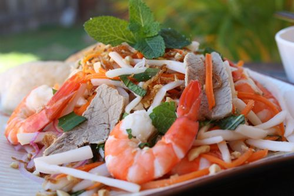

INGREDIENTS
6oz Pork
1/2 lb. Large Shrimp
1 bunch Vietnamese Mint
1-2 Carrots
2/3 cup Roasted Peanuts
2/3 cup sliced Onion
1 Lotus Root Jar (16oz)
minced Garlic
3 Tbsp. Vinegar
1 Tbsp. Sugar
1 Tbsp. Light Soy Sauce
Kosher Salt
Dipping Fish Sauce
DIRECTIONS
Boil some water with 6oz Pork and a pinch of Kosher Salt. To remove the impurities, drain out the water. Fill the pan with some water again.
Add 1 tsp. minced Garlic and another pinch of Kosher Salt. This time boil until the water has been absorbed. You can cut the pork into smaller chuck.
Once it's cooked, add in about 1 Tbsp. of oil.
Pan fry it until it's slightly golden and remove from heat. Cut into slices and set aside.
In a different pan, boil some water. Add in 1/2 lb. Shrimp and 1 tsp. minced Garlic. Boil until it turns pink. Remove from heat, let it cool.
Then peel and cut the shrimp in half. Place into a bowl and set aside.
Drain out the Lotus Root Jar, rinse with water. Then soak it in water with 1/2 tsp. Kosher Salt for about 15 minutes.
Cut the Lotus Root into smaller strips. After 15 minutes, drain out the water and rinse with cold water. Then set aside.
Peel and cut about 1-2 Carrot into strips. Place in a bowl, add in 1/2 tsp. Kosher Salt. Let it sit for about 10 minutes and rinse with water.
Drain out all the water and set aside.
In a pan add in 2 Tbsp. Oil. and 2 Tbsp. minced Garlic. Saute until slightly brown, place into a bowl and set aside.
Wash and chop 1 bunch Vietnamese Mint.
For the dressing, add 2/3 sliced Onion, 3 Tbsp. Vinegar, 1 Tbsp. Sugar and 1 Tbsp. Light Soy Sauce. Mix well and set aside.
In a large bowl add in the Carrot, Lotus Root, Shrimp, Pork, Sauteed Garlic, dressing, chopped Vietnamese Mint and Dipping Fish Sauce to taste. Mix well.
Top with some Cilantro and crushed Roasted Peanuts and enjoy.

⇒To get more instructions. Please watch the guide video behind